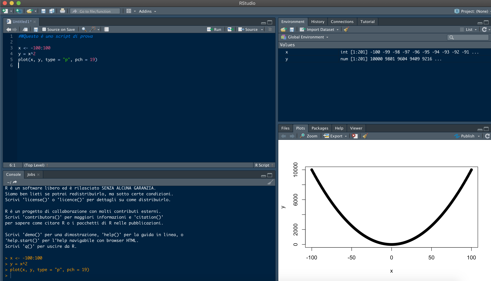

Capitolo 3 Le basi
3.1 Che cosa è l’ambiente R
R è un ambiente di programmazione. Parafrasando Morpheus che sfida Neo nella palestra virtuale di “Struttura”, diremo che l’ambiente R ha le sue (poche) regole, e che conoscerle rappresenta il primo passo per impadronirsi di questo strumento (e aggirare o infrangere le sue regole).
In questa sezione saranno introdotte alcune nozioni generali che, spesso, sono date per scontate e quindi non chiaramente delineate. Nella nostra esperienza, dare per scontati questi concetti rende ostica il primo impatto con R e la prima fase dell’apprendimento, durante la quale la comprensione della sintassi e delle strutture è ancora faticoso per il nuovo utente.
Al contrario, se resi comprensibili e chiari, i capisaldi della sintassi possono essere dei punti di riferimento quando guardiamo un codice scritto da altri o da noi stessi un pò di tempo fa… E dunque questa parte del testo è concepita per illustrare le poche, chiare e strutture (simboli e oggetti) e regole generali che sono alla base delle procedure nell’ambiente R.
Dunque impareremo la differenza sostanziale tra una espressione ed una assegnazione, l’utilizzo delle parentesi e le diverse tipologie di oggetti di base.
Successivamente, imparemo a comporre dei semplici codici per apprendere come espressioni, assegnazioni, e oggetti possono interagire. Nel farlo, cercheremo subito di introdurre delle norme di stile e delle buone pratiche che ci aiuteranno a essere più ordinati, efficienti ed efficaci.
R è un ambiente per Object-oriented programming, cioè uno stile di programmazione diventato molto popolare negli ultimi anni. Questo stile si basa sull’utilizzo (la manipolazione mediante comandi) di oggetti, un approccio che rende molto semplice accedere (leggere e scrivere) ai dati in memoria e combinarli in strutture molto complesse. Aspetti fondamentali dei lunguaggi object-oriented sono il concetto di classe e quello di metodo, sui quali torneremo in seguito in maniera approfondita.
Classi e Metodi sono legati dal fatto che, in R, la computazione si basa sull’applicazione di specifici metodi a oggetti di specifiche classi. Non esiste una corrispondenza biunivoca tra classi e metodi, piuttosto molti metodi possono essere applicati a oggetti di classi diverse e viceversa. Tuttavia, metodi diversi sono generalmente specializzati per essere applicati su specifiche classi di oggetti. Questa associazione metodi-classi è spesso molto intuitiva, ma esistono funzioni generiche per determinare di che classe sia un dato oggetto e quali siano i metodi su di esso applicabili.
Un altro aspetto importante dei lunguaggi object-oriented è quello di inheritance (eredità). Questo aspetto può essere sintetizzato come la capacità degli oggetti generati durante l’esecuzione di un codice o di una procedura di calcolo di “portarsi appresso” le caratteristiche degli oggetti “genitori”, cioè quelli a partire dai quali sono stati generati. Un banalissimo esempio intuitivo è il seguente: se definisco due quantità numeriche a e b e le sommo, quello che ottengo (c) erediterà le caratteristiche dei genitori (numerici entrambi) e potrà essere trattato come tale. Questo aspetto semplifica enormemente il lavoro poichè, a differenza di quanto avviene in linguaggi di base, non è necessario pre-definire l’oggetto c indicandone esplicitamente le caratteristiche e poi riempirlo.
Continuando l’elenco dei grandi vantaggi di R, dobbiamo sicuramente menzionare la sua enorme Community. Secondo la compagnia di analisi del software TIOBE, l’ambiente R è attualemnte al 9° posto tra i linguaggi più popolari ma, soprattutto, è quello che continua a crescere al ritmo più sostenuto.
TIOBE <- data.frame(Name = c("C", "Java", "Python", "C++", "C#", "Visual Basic", "Java Script", "R",
"PHP", "SQL", "Go", "Swift", "Pearl", "Assembly language", "Ruby",
"MATLAB", "Classic Visual Basic", "Groovy", "Objective-C", "Rust"),
Ratings = c(16.98, 14.43, 9.69, 6.84, 4.68, 4.66, 2.87, 2.79, 2.24, 1.46, 1.43, 1.42, 1.11, 1.04, 1.03, 0.86, 0.82, 0.77, 0.76, 0.74),
Change = c(1.83, -1.60, -0.33, 0.78, 0.83, 0.97, 0.62, 1.97, 0.17, -0.17, 0.45, 0.53, 0.25, -0.07, -0.28, -0.41, -0.20, -0.46, -0.93, 0.29))
knitr::kable(
head(TIOBE, nrow(TIOBE)), caption = 'TIOBE Index for August 2020',
booktabs = TRUE
)| Name | Ratings | Change |
|---|---|---|
| C | 16.98 | 1.83 |
| Java | 14.43 | -1.60 |
| Python | 9.69 | -0.33 |
| C++ | 6.84 | 0.78 |
| C# | 4.68 | 0.83 |
| Visual Basic | 4.66 | 0.97 |
| Java Script | 2.87 | 0.62 |
| R | 2.79 | 1.97 |
| PHP | 2.24 | 0.17 |
| SQL | 1.46 | -0.17 |
| Go | 1.43 | 0.45 |
| Swift | 1.42 | 0.53 |
| Pearl | 1.11 | 0.25 |
| Assembly language | 1.04 | -0.07 |
| Ruby | 1.03 | -0.28 |
| MATLAB | 0.86 | -0.41 |
| Classic Visual Basic | 0.82 | -0.20 |
| Groovy | 0.77 | -0.46 |
| Objective-C | 0.76 | -0.93 |
| Rust | 0.74 | 0.29 |
par(las = 2, mar = c(5,10,1,1), cex = 0.7)
barplot(TIOBE$Ratings[order(TIOBE$Ratings, decreasing = F)],
names.arg = TIOBE$Name[order(TIOBE$Ratings, decreasing = F)],
xlab = "Ratings (%)", ylab = "",
col = c(rep("grey",12),"blue",rep("grey",7)), horiz = T)
Questo dato è ancora più significativo se si considera che R non è esattamente un ambiente per produrre software compilato e quindi eseguibili (come avviene invece con i membri della famiglia C). Perchè questo aspetto è così importante? Semplicemente perchè, essendo R un ambiente “libero”, ogni utente può attingere a una sterminata banca dati di dati, algoritmi, pacchetti e funzioni già sviluppati da altri utenti… e spesso può contare sull’aiuto diretto di altri utenti. In ambito scientifico, R ha avuto (e continua ad avere) una diffusione inarrestabile perchè incarna perfettamente alcuni ideali della ricerca: la possibilità di sviluppare metodologie completamente replicabili, chiare e ulteriormente implementabili. Come ha giustamente argomentato qui Shannon Ellis, una community ampia offre sviluppatori, esperti, collaboratori potenziali, estensori di documentazione, persone che mettono alla prova le nostre routine, “agitatori” (che sono sempre utili per tenere viva la community!) o semplicemente persone gentili che sono disposte ad aiutare i neofiti. Ma, soprattutto, qualsiasi sia la sfida con la quale siete alle prese, molto probabilmente qualcuno ci si è già cimentato e potrete ripartire dal suo lavoro. Non è forse, questo, un enorme vantaggio? Shannon Ellis ha compilato una lista di siti/blog che rappresentano i principali canali web della community di R. I principali sono:
- (Revolution) Local R meetup groups - un motore di ricerca che aiuta a trovare riferimenti nella propria area di interesse (per salire sulla spalle dei giganti);
- Rweekly - un magazine settimanale di quello che succede nel mondo di R;
- R-bloggers - un archivio di post utili fatti tra utenti di R;
- Stack Overflow - dove cercare risposte alle nostre domande, spesso legate alle difficoltà dei neofiti (ma non solo)
Una bella e completa descrizione di cosa sia R la trovate qui. In sintesi:
- R è un ambiente integrato e coerente per l’analisi statistica;
- R è contemporaneamente un linguaggio ed un software;
- R è un potente strumento per la produzione di grafici (originali);
- R è distribuito gratuitamente sotto i vincoli della GPL - General Public License ed è disponibile per diverse architetture hardware e sistemi operativi: Unix, Linux, Windows, MacOS.
- R è disponibile presso il sito The R Project for Statistical Computing dove è possibile scaricare, oltre che il programma base, anche una serie di moduli aggiuntivi e un’ampia manualistica (in lingua inglese) sull’ambiente che va dall’installazione del software al suo utilizzo nell’analisi dei dati;
- il sorgente di R è scritto parte nel linguaggio C e parte nel linguaggio Fortran.
3.2 A cosa serve/non serve R
R non è una panacea, e anche gli appassionati di questo strumento devono essere a conoscenza dei suoi difetti quanto dei suoi pregi. Da una parte, R si comporta come gli smartphone (un nuovo tipo di device che, dalla sua comparsa sul mercato, ha completamente “assorbito” e messo fuori dal mercato altri device come i lettori mp3, le fotocamere, i navigatori satellitari). Infatti chi usa R può facilmente rinunciare a fogli di calcolo, software proprietari per la statistica, gestori di database, piattaforme per la geostatistica, software per l’analisi e la manipolazione di immagini, e la lista potrebbe continuare. R può servire praticamente a tutto! Un altro grande vantaggio di R è che, essendo un software opensource, si può accedere al codice sorgente e modificarlo (Linux Torvalds docet). R è praticamente gratuito e quindi di grande valore per particolari categorie di utenti che non possono permettersi costosi software per analisi statistiche come gli studenti oppure gli utilizzatori e i ricercatori dei Paesi in via di sviluppo. R possiede un’ampia biblioteca di manuali e dispense (come questa!) accessibili gratuitamente in rete, oltre a pubblicazioni a pagamento. L’installazione base di R può essere integrata con librerie di funzioni addizionali (il vero valore aggiunto per il mondo della ricerca) che ne ampliano a dismisura le capacità. R offre un supporto tramite l’R Development Core Team. Infine, R sa “parlare” con altri linguaggi, da C a SQL a fortran e Python, per cui si possono integrare metodi e funzioni sviluppate in altri contesti. Per essere proprio completi, è importante ricordare che.
- R ha una quantità veramente incredibile di funzioni grafiche che consentono di ottenere grafici estremamente efficaci dal punto di vista scientifico ma anche “belli”
- R permette di essere creartivi ed efficienti, poichè consente di scrivere nuove funzioni o intere librerie in maniera molto semplice
- La sua versione base è molto snella, ed essendo sviluppato secondo una logica vettoriale lavora molto bene su vettori e matrici
E le brutte notizie?
Beh…
- R è brutto: la sua interfaccia non è pensata per essere bella e accattivante come gli OS ai quali siamo abituati. L’ interfaccia utente a carattere (CUI) di R è anche “ostico”, poichè ci costringe a cambiare modo di lavorare. E’ vero che è presente anche un’interfaccia GUI (Graphical User Interface), ma gli utenti esperti non la usano quasi mai;
- R è un elefante: la sua velocità di calcolo è di gran lunga inferiore a quelle di ambienti e linguacci di livello più basso (come la famiglia C o Visual Basic). Questo, a volte, costringe gli utenti più esperti a compilare delle funzioni in C tutte le volte che le loro analisi diventano computational and time demanding;
- Non tutte le funzioni di R sono ottimizzate per avere elevate prestazioni (un buon esempio sono le funzioni di ottimizzazione numerica). Se lavorate in un settore di frontiera della ricerca, potreste essere costretti a metterci del vostro per sviluppare funzioni nuove o più performanti;
- Se sviluppate un’applicazione basata su R, è vostro onere tutto quello che rigarda il debug e il mantenimento: se salta fuori un problema, non potete prendervela con nessun altro!
3.3 “What You See Is What You Mean”: dallo Script al terminale (e viceversa)
Per affrontare la prima parte, dedicata a una carrellata degli aspetti base (concettuali e di sintassi) dell’ambiente R, è necessario assimilare alcuni termini (e strumenti): Il terminale (detto console in inglese, così come è denominata la sua finestra nell’interfaccia di R studio), è l’ interfaccia attraverso il quale l’utente interagisce con R.

Citando testualmente Wikipedia: “In informatica una interfaccia a riga di comando[1] (dall’inglese command line interface, in acronimo CLI) o anche console, a volte detta semplicemente riga di comando e, impropriamente[senza fonte], prompt dei comandi, è un tipo di interfaccia utente caratterizzata da un’interazione testuale tra utente ed elaboratore (vedi shell): l’utente impartisce comandi testuali in input mediante tastiera alfanumerica e riceve risposte testuali in output dall’elaboratore mediante display o stampante alfanumerici. Nei sistemi operativi moderni usati nei personal computer, al posto della CLI, in buona parte, c’è l’interfaccia grafica con caratteristiche tipicamente user friendly”. Il primo (e forse principale) trauma al quale il neofita di R si trova di fronte è la necessità di rinunciare (possibilmente da subito e definitavamente) all’interazione tramite il mouse e quindi le interfacce a finestre e menù a tendina che tanto ci sono familiari e rispetto alle quali abbiamo sviluppato una certa dipendenza! Quando si comincia a usare R, bisogna accettare di inserire i comandi digitandoli direttamente nel terminale o predisponendoli in uno script (una sequenza di comandi annotata da qualche parte, generalmente in un editor di testo o in una apposita finestra di R studio). Ci sono due motivi principali per questo: 1. Sarebbe impossibile codificare tutti i possibili comandi di R in un menù grafico o a tendina, senza considerare che questo limiterebbe comunque l’originalità degli utenti e renderebbe assai complesso combinare insieme varie funzioni; 2. Imparare a usare il terminale rende il lavoro estremamente più veloce (provare per credere). Questo secondo aspetto accomuna R a tanti altri ambienti di alto livello e persino a sistemi operativi come Ubuntu e Debian (due delle principali distribuzioni di Linux). Per utilizzare il terminale, però, non basta conoscere la sintassi dei comandi: bisogna cambiare filosofia. Quando utilizziamo un elaboratore di testo, digitiamo i caratteri sapendo che esiste una precisa corrispondenza tra i tasti che premiamo e il risultato che apparirà sullo schermo. Questo modo di operare viene denominaro What You See Is What You Get (“quello che vedi è quello che è” o “ottieni quanto vedi” - acronimo WYSIWYG). Utilizzare il terminale di un ambiente come R significa invece applicare la filosofia What You See Is What You Mean (letteralmente: quel che vedi è ciò che intendi; sinteticamente, vedi quanto intendi - acronimo WYSIWYM). In sostanza, le istruzioni che digitiamo non sono semplici parole sullo schermo ma implicano l’applicazione di funzioni anche complesse che, nelle intenzioni dell’utente, devono restituire un risultato di qualche tipo. L’utilizzo di R si svolge tipicamente attraverso un continuo passaggio dall’editor di testo, dove si modica lo script, al terminale dove lo si esegue. Se poi si usano interfacce avanzate come R studioTIOBE, si può disporre di utili finestre accessorie (come quella dei grafici). La figura seguente ci mostra una tipica schermata di R studio
 L’interfaccia di Rstudio contiene 4 finestre che sono spesso organizzate in questo modo (ma l’utente ha ampie possibilità di personalizzarle). Analizziamo questo esempio:
In alto a sinistra c’è lo Script o gli Script se si vule gestire più procedure separate. Questa finestra è semplicemente un blocco note multipagina che consente di inviare i comandi direttamente al terminale
In basso a sinistra ecco proprio lui, il terminale, ovvero il canale di collegamento in ingresso da noi verso R. In Rstudio, questa finestra si chiama Console. avete presente Ellen Ripley che comunica con Mother mediante un terminale? Ecco, il concetto è quello e… a volte penserete che R è antipatico quasi quanto Mother :-)

In alto a destra c’è una finestra “composita” che racchiude Environment, all’interno del quale troveremo un elenco (con alcune caratteristiche essenziali) degli oggetti nella memoria della sessione, History, una cronologia dei comandi passati alla Console, e infine le tre sottofinestre Connections, Build e Tutorial sulle quali, per ora, possiamo sorvolare.
In basso a destra c’è un’altra finestra “composita” che racchiude Files, cioè l’elenco dei file nella cartella di lavoro (la directory del pc) scelta per la sessione, Plots, che conterrà le anteprime dei grafici realizzati, Packages, che è un prontuario di tutti gli help dei pacchetti installlati, Help, l’interfaccia minimale di aiuto che presto impareremo ad apprezzare, e Viewer, destinata a mostrare contenuto HTML come le applicazioni Shiny.
Una tipica sessione di lavoro in R con Rstudio prevedere un utizzo semi-simultaneo di questi pannelli, e principalmente dello Script e del Terminale o Console.
3.4 Le Espressioni
R è, prima di tutto, un ambiente per calcolo. In questo senso, possiamo vedere il terminale come una calcolatrice. E’ possibile eseguire calcoli semplici o complessi direttamente mediante il terminale, digitando delle istruzioni analoghe alle formule algebriche, cioè utilizzando un insieme di quantità numeriche, simboli e operatori matematici, e poi premendo il tasto INVIO. Come avviene per altri ambienti e linguaggi di programmazione, gli operatori matematici di base sono:
- La somma, codificata col simbolo +.
## [1] 7- La sottrazione, codificata col simbolo -.
## [1] -3- La moltiplicazione, codificata col simbolo *.
## [1] 10- La divisione, codificata col simbolo /.
## [1] 0.4- L’elevamento a potenza, codicato col simbolo ^ (ad esempio x^2 indica x elevato al quadrato).
## [1] 32Esistono poi altre simbologie con un significato matematico definito, come ad esempio:
- Il simbolo : che serve a generare una sequenza ordinata di interi tra un minino ed un massimo definiti, come ad esempio
## [1] 1 2 3 4 5 6 7 8 9 10- Il simbolo % che serve, ad esempio, per specificare il prodotto scalare invece che quello generico (vettoriale se utilizzato su vettori), come ad esempio
## [,1]
## [1,] 85All’interno di R, l’utilizzo delle varie tipologie di parentesi è legato a funzionalità diverse (vedi più avanti). Per questo motivo, le parentesi ** tonde ** sono, di fatto, l’unica tipologia di parentesi che mantiene (anche) un significato matematico. Ad esempio
## [1] 10Questo implica che, se esistono espressioni annidate, dovremo utilizzare sempre e solo le parentesi tonde (invece che passare alle quadre e poi alle graffe come ci hanno insegnato a scuola):
## [1] 7.5E’ ovvio che l’utilzzo delle parentesi deve essere sempre “simmetrico” (una parentesi apre e una chiude) e coerente (i conti devono tornare e quindi ci devono essere tante parentesi aperte quanto quelle chiuse). Quando le espressioni diventano molto complesse, quindi, diventa complicato capire, a colpo d’occhio, quali sono le coppie di parentesi. Ad esempio:
## [1] 243Comunque i più comuni editor per gli script, e quindi anche software più complessi e integrati come R studio, ci vengono in soccorso evidenziando le coppie di parentesi quando ci spostiamo lungo una espressione con le frecce destra e sinistra della tastiera (provare per credere!). Le frecce in alto e in basso, invece, possono essere usate per scorrere nella cronologia dei comandi che abbiamo inserito tramite il terminale. Questo ci aiuta a non dover ri-digitare daccapo un’istruzione usata poco prima. Possiamo digitare le espressioni, dunque, attraverso il terminale che, abbiamo già imparato, ci appare come il simbolo >. Tuttavia, quando digitiamo un’espressione matematicamente incompleta (nella quale, ad esempio, manca una parentesi o un argomento legato ad un operatore), R non eseguirà il calcolo ma ci risponderà con l’operatore + che serve a farci capire che “manca qualcosa”. E’ possibile (ma vedremo che è preferibile non farlo per non pasticciare il codice) inserire più espressioni, separate da ; o . nella stessa linea di comando (prima di premere INVIO). In ogni caso, le espressioni digitate direttamente nel terminale non vengono salvate in memoria e non possono essere usate per produrre risultati molto complessi. Tutte le volte che sono necessari più passaggi per arrivare dai dati di partenza ai risultati finali è necessario “prendere appunti”, cioè generare delle quantità intermedie e associare ad esse dei nomi. Questo è esattamente quello in cui consiste l’ assegnazione.
3.5 Le Assegnazioni
Il risultato di una semplice espressione, come gli esempi del paragrafo precedente, viene stampato sullo schermo, cioè appare come risposta di R nel terminale, ma non viene memorizzato. Per generare una costante, una variabile o un qualsiasi oggetto che contenga uno o più valori (che magari solo il risultato di espressioni matematiche) è necessario assegnare all’espressione un nome. Questo è possibile farlo attraverso i comandi = e <-. Ad esempio:
hanno lo stesso significato e producono il medesimo effetto: l’oggetto a sarà associato alla quantità 4. Perché questa ridondanza (2 simbologie per la stessa cosa)? In realtà, = e <- non si comportano esattamente allo stesso modo. Per cogliere la differenza, proviamo a digitare la seguente espressione, basata sull’utilizzo della funzione sum:
## [1] 9## [1] 4Dopo che R ci avrà restituito il risultato 9, proviamo a “chiedergli” se ricorda quanto valgono a e b, ad esempio digitando a nel terminale e premendo invio. Scopriremo che R non ricorda quanto valga a! Se invece provassimo a digitare l’espressione:
## [1] 9## [1] 4e poi chiedessimo a R quanto vale a (oppure b) scopriremmo che R ha memorizzato i loro valori. Il perchè di questa apparente stranezza sta nel fatto che l’ambiente di calcolo di R non è unico, bensì ogni funzione opera in un suo “spazio” secondario e solo le quantità assegnate con <- trascendono dal sottospazio definito dalla funzione sum allo spazio generale attraverso il quale dialoghiamo. Dunque, a seconda che vogliamo assegnare delle quantità “generali” o “locali” sceglieremo la simbologia corrispondente, tenendo presente che esistono delle “buona pratiche” che vedremo più avanti. Ovviamente una differenza sostanziale tra = e <- sta anche nella complessità (e quindi nella velocità) delle due scritture: nel secondo caso, dovremo usare una combinazione due tasti (< + -) invece che uno, e quindi l’assegnazione “generale” è più “faticosa”. Un’ultima precisazione: le assegnazioni possono essere scritte anche da sinistra verso destra. Ad esempio le scritture:
sono funzionalmente equivalenti. Tuttavia si sconsiglia la seconda poichè, come chiunque può sperimentare, è molto più chiaro un algoritmo in cui gli oggetti generati nei diversi passaggi compaiono subito all’inizio di ogni riga.
3.6 Sintassi di base (I): l’uso delle parentesi
Le parentesi sono dei simboli tipografici ampiamente usate sia nella lingua scritta che nella matematica. Esistono 3 tipi di parentesi, e per ognuno di essi esiste una versione di apertura delle parentesi ed una di chiusura: la prima è generalmente un’immagine dotata di convessità verso sinistra, mentre la seconda la possiede generalmente a destra. Nell’ambiente R, le parentesi sono delle strutture molto importanti usate per finalità ben precise. Per questo è fondamentale imparare ad usarle in modo appropriato ed imparare a riconoscerele all’interno di uno script, in modo da orientarsi in procedure complicate o istruzioni annidate. All’interno di R, ognuna delle tre diverse tipologie di parentesi (tonde, quadre, graffe) è destinata a uno scopo preciso:
3.6.1 Le parentesi tonde
Servono per specificare gli argomenti (ed eventualmente le opzioni) di una funzione. In sostanza, le parentesi tonde deliminato un micro-ambiente, parzialmente indipendente da quello generale, all’interno del quale entrano alcuni oggetti o valori (gli argomenti) e dal quale fuoriescono altri oggetti o valori (i risultati). Può essere utile, a questo punto, fare un piccolo antipasto di come si usano le funzioni in R (torneremo estesamente più avanti sull’argomento). L’esempio seguente ci mostra il risultato dell’utilizzo della funzione c, una delle più semplici tra quelle di base.
## [1] 1 2 3 5Il nome c sta per concatenate (concatena), e difatti questa funzione mette insieme gli argomenti, separati da virgole, in un singolo oggetto (in questo caso un vettore composto da 4 numeri). Le parentesi tonde seguono sempre il nome della funzione e racchiudono gli argomenti (e le opzioni, se ci sono) separati da virgole. In questo caso non abbiamo effettuato nessuna assegnazione, e il terminale di R esegue il comando restituendoci il vettore desiderato. Un altro semplice esempio è:
## [1] 11In questo caso, abbiamo generato un vettore denominato a e poi abbiamo applicato la funzione sum (somma) su di esso, ottenendo il risultato corrispondente alla somma degli elementi di a. Gli argomenti di una funzione, dunque, sono i dati in ingresso, la materia prima per permettere alla funzione di lavorare e restituirci un risultato.
Il concetto di annidamento mediante le tonde visto da Ciro Fanelli
3.6.2 Le parentesi quadre
Servono per indicizzare gli oggetti, cioè per identificare al loro interno delle sottoparti precise. Come all’interno di una griglia spaziale (immaginate di giocare una partita di battaglia navale), le parentesi quadre ci permettono di fare riferimento a pezzi specifici di oggetti complessi, permettendoci di manipolarli (estrarne delle parti, sostituirle, modificarle, ecc.). Anche in questo caso si possono fare degli esempi preliminari.
## [1] 10La scrittura precedente definisce un nuovo vettore a e poi, mediante l’uso delle parentesi quadre, ne identifica e isola il primo valore (in questo caso il numero 10). Naturalmente potremmo isolare, con la stessa logica, un altro elemento di a, per esempio il quarto.
## [1] 5Dovrebbe essere chiaro, quindi, che il numero che compare tra le parentesi quadre corrisponde alla posizione dell’elemento desiderato, e non al suo valore. Siccome un vettore di numeri è, per definizione, un oggetto unidimensionale, è sufficiente un singolo valore (la “posizione nella fila”) per indicare un singolo valore (come nella coda alle poste). Ma cosa accade quando abbiamo oggetti con più di una dimensione? Per comprenderlo estendiamo gli esempi alle matrici (che sono oggetti a due dimensioni, righe e colonne). Vediamo un esempio:
## [,1] [,2] [,3]
## [1,] 101 104 107
## [2,] 102 105 108
## [3,] 103 106 109## [1] 101Sorvoliamo sull’analisi degli argomenti della funzione matrix (i lettori più scaltri avranno intuito chela funzione la genera mettendo i valori da 101 a 109 in 3 righe e 3 colonne, come si vede dalla struttura che R stampa sullo schermo quando invochiamo m), e vediamo come, in questo caso, all’interno delle parentesi quadre abbiamo messo 2 numeri, 1 e 1, separati da una virgola. R ci dice che m[1,1] corrisponde al numero 101, quello collocato nella prima riga e prima colonna della matrice. Allo stesso modo potremmo identificare il numero 104 come quello nella prima riga e seconda colonna.
## [,1] [,2] [,3]
## [1,] 101 104 107
## [2,] 102 105 108
## [3,] 103 106 109## [1] 104Insomma i due valori separati da virgola tra le quadre sono niente altro che le coordinate dei valori desiderati. Nel caso di un oggetto bidimensionale come una matrice, per indicare un elemento si deve ragionare come in una partita di battaglia navale!
Naturalmente possiamo voler isolare più di un elemento di un oggetto complesso, ad esempio:
## [,1] [,2] [,3]
## [1,] 101 104 107
## [2,] 102 105 108
## [3,] 103 106 109## [,1] [,2]
## [1,] 101 104
## [2,] 102 105In questo caso, abbiamo isolato un pezzo della matrice m, corrispondente alle prime 4 celle (quelle nelle prime due righe e prime due colonne) e lo abbiamo assegnato all’oggetto n. Un ultimo esempio, la selezione di elementi non contingui:
## [,1] [,2] [,3]
## [1,] 101 104 107
## [2,] 102 105 108
## [3,] 103 106 109## [,1] [,2]
## [1,] 101 107
## [2,] 103 109Analizzando il codice dell’esempio, dovremmo poter capire che, all’interno delle quadre, abbiamo indicato due vettori generati con la funzione c. Ciascuno di essi corrisponde al vettore composto da due elementi, i numeri 1 e 3, e quindi il risultato complessivo sarà la creazione di un oggetto n, anch’esso una matrice, composto dagli elementi nella prima riga e terza colonna di m. Torneremo sul concetto di indicizzazione, e sul suo utilizzo, man mano che prenderemo familiarietà con oggetti aventi struttura più complessa (come ad esempio le liste o gli array)

Il concetto di indicizzazione mediante le quadre visto da Ciro Fanelli
3.6.3 Le parentesi graffe
Servono principalmente a delimitare strutture precise come i loop (cicli). Dunque le vedremo comparire all’interno di un codice per generare e gestire delle strutture di controllo complesse come le scelte (il ciclo if, else) o iterazioni di blocchi di istruzioni (il ciclo for). Un esempio è:
## [1] 10In questo caso, abbiamo definito tre oggetti ( a, b, e c), e poi abbiamo usato la struttura di controllo for per iterare una semplice operazione: prendere a e sommargli b volte c. Il risultato, intuitivo, è 10. Le graffe servono per racchiudere il ciclo for. E’ interessante notare che, manipolando i valori di a, b e c, si possono ottenere risultati diversi… il che è esattamente lo spirito di una struttura iterativa del genere. Vedremo che le parentesi graffe servono anche a definire le funzioni, ma su questo torneremo più avanti.

Il concetto di gestione dei cicli mediante le graffe visto da Ciro Fanelli
3.7 Tipologie di dati: gli attributi e le classi
Tutti i linguaggi di programmazione a oggetti (ed R è uno di questi) sono basati sul fatto che blocchi di informazione detti oggetti (siano essi quantità, variabili, istruzioni, procedure complesse) siano utilizzati per accedere ad altrettanti blocchi di dati in memoria. Questa è una differenza sostaziale rispetto ad altri linguaggi come C che si basano sull’accesso diretto ai dati in memoria, cosa che R non consente. All’interno di R gli oggetti hanno un nome esclusivo e sono l’elemento di base su cui lavorare, qualsiasi sia la loro struttura. Il modo in cui R immagazzina in memoria una dato oggetto è detta tipo dell’oggetto stesso. Non è importante approfondire i diversi tipi di oggetti in R, per cui non ci dilungheremo sull’argomento.
Quello che, invece, è veramente importante sapere è che ogni tipo oggetto possiede una serie di attributi. Tra questi, quello che spicca per importante è la Classe. Come abbiamo già detto in precedenza, le classi sono importanti poichè a seconda di essere variano i metodi che si possono applicare agli oggetti. A questo punto è utile chiarire che i metodi non sono altro che funzioni, e che quindi a ogni classe di oggetti possono essere applicate funzioni diverse, ovvero che una stessa funzione può avere comportamenti diversi a seconda della classe dei suoi argomenti (cioè degli oggetti sui quali viene applicata).
All’interno di R è possibile operare con diverse tipologie di dati, per ognuna della quali esiste una classe predefinita. Sebbene ci siano molte classi già implementate ed altre possano essere definite dagli utenti esperti, esistono 5 classi principali di dati:
- La classe numeric, destinata a tutti i numeri reali (elementi dell’insieme R)
- La classe integer, destinata a tutti i numeri interi (elementi dell’insieme N)
- La classe character, destinata alle stringhe di testo o alle sequenze di caratteri
- La classe logical, destinata alle espressioni nell’accezione dell’Algebra di Boole
- La classe factor, destinata a variabili o quantità qualitative o semi-quantitative
E’ facile immaginare il senso delle prime due classi, poichè si riferiscono a insiemi ben noti della matematica. Anche la terza classe è intuitivamente familiare: chiunque abbia esperienza di programmazione sa cosa sono i caratteri. Per gli altri è sufficiente dire che il testo (formato da caratteri) è un tipo di informazione particolare per gli ambienti di calcolo (come R), poichè se ne possono valutare le caratteristiche (quanti caratteri ci sono in una stringa? Quante parole ci sono in un testo?) ma non ha senso applicare funzioni matematiche ai testi. La quarta classe si riferisce agli oggetti (le espressioni, ma in un senso diverso da quello di cui abbiamo parlato in una sezione precedente a proposito di R) propri dell’Algebra di Boole, il grande matematico inglese che ha gettato le basi per la computazione elettorica. L’ultima classe è pensata per permetterci di gestire valori semi-quantitativi o qualitativi. Si possono fare moltissimi esempi di “fattori” (variabili che possono assumere un numero finito di stati o valori): il sesso di ciascun individuo di una popolazione, il colore degli occhi di diversi individui, la classe di età (coorte) a cui appartengono, l’intensità di un trattamento farmacologico. La cosa importante da dire, in proposito, è che possono esserci fattori ordinabili e fattori non ordinabili. Un esempio del primo tipo sono il sesso o il colore degli occhi: non ha senso dire che maschio viene prima di femmina o che ci sia una scala ordinata di colori (o forse si?). Esempi di fattori ordinabili sono invece la classe di età (coorte) o l’intensità di un trattamento farmacologico: è possibile stabilire una sequenza continua di valori (es. classe di età 0, classe 1, classe 2 e così via).
Per ciascuna delle 5 classi esiste un comando (funzione) che serve a generare un oggetto appartenente alla classe voluta. I comandi in questione hanno lo stesso nome della classe, e quindi avremo le funzioni:
- numeric()
- integer()
- character()
- logical()
- factor()
L’utilizzo di queste funzioni è abbastanza intuitivo. Ad esempio, la funzione numeric può essere utulizzata con un solo argomento ( length, ovvero lunghezza) per generare un vettore numerico pieno di zeri (0 è il valore di default) di dimensione desiderata.
## [1] 0 0 0 0 0Lo stesso avviene per integer, character, e logical
## [1] 0 0 0 0 0Nel caso di integer non c’è molto da dire.
## [1] "" "" "" "" ""Nel caso di character otteniamo una sequenza di blocchi di testo vuoti.
## [1] FALSE FALSE FALSE FALSE FALSENel caso di logical otteniamo una sequenza di espressioni booleane, per definizione false (che è il corrispettivo di 0 nell’Algebra binaria di Boole, mentre 1 corrisponde a true). Una piccola trattazione dell’Algebra di Boole, così importante per la programmazione, ci aspetta più avanti.
Una cosa che merita di essere detta, inoltre, è che R è in grado di riconoscere automaticamente le caratteristiche di un oggetto e assegnarlo alla classe opportuna. Proviamo a riprendere uno degli esempi precedenti e, dopo aver generato una variabile di nome a alla quale assegnamo valore 4, usiamo la funzione class() per chiedere a R che roba sia a.
## [1] "numeric"In questo esempio, R ha correttamente dedotto che volessimo generare una quantità numerica. In effetti, avremmo potuto anche scegliere di assegnare a alla classe integer. Tuttavia R sceglierà sempre come default la classe numeric (che è un sinonimo di double per chi ha già familiarità con linguaggi di programmazione, e in effetti double è il tipo degli oggetti numeric, cioè il modo con cui viene archiviato in memoria) per tutti gli oggetti che contengono solo numeri.
E’ anche possibule definire un oggetto senza inserirne direttamente il valore, e l’esempio che segue ci permette anche di riprendere il concetto di eredità (inheritance).
## [1] 7## [1] "numeric"In questo esempio abbiamo definito la quantità a come la somma della radice quadrata di 9 (la funzione sqrt è appunto l’acronimo di square root) e del numero 2 elevato al quadrato. Interrogato sul valore di a e sulla sua classe, R ci risponde che a vale 7 e che è un numeric. R ha automaticamente calcolato il risultato e lo ha assegnato all’oggetto a. Inoltre, ha dedotto che a è un oggetto della classe numeric, e questo è precisamente un esempio di eredità della classe.
3.8 Strutture di dati
A questo punto, dopo aver visto quali sono le principali tipologie di dati che si possono gestire in R, dobbiamo comprendere in quali modi è possibile organizzarli. L’oggetto più semplice all’interno di R è il vettore, ma strutture di base sono anche le matrici, gli array, le liste e, infine, i data frame (che possono essere considerati degli oggetti “speciali”).
3.8.1 Vettori
Un vettore può essere pensato come una serie di celle concatenate, ognuna delle quali contiene un valore. A ciascuna cella o elemento del vettore corrisponde un indice di posizione che, come nel caso dei numeri civici su una via che consentono al corriere amazon di trovare un destinatario specifico, possono essere usati per manipolare il vettore, ad esempio estraendone i valori presenti in celle precise identificate tra quadre in una indicizzazione. La cosa importante da assimilare è che un vettore può contenere elementi che appartengono tutti a una stessa classe. Questo vuol dire che R gestisce vettori di tanti tipi, i principali dei quali sono proprio i character, integer, logical, numeric…. insomma proprio le classi che abbiamo visto poco fa. Esistono anche altri tipi di vettori, che menzioniamo senza approfondire: complex (numeri complessi), double, expression, list, single, e raw. Generare un vettore è molto semplice, e non indicheremo due modalità alternative:
- Mediante la sua “funzione generatrice”. Ne esiste una per ogni tipo di vettore, e il suo nome è intuitivo. Ad esempio, per generare un vettore numeric c’è la funzione omonima numeric. Il suo utilizzo, come quello delle sue “sorelle” character, logical, integer, e factor (ma vale anche per gli altri tipi appena menzionati), è molto semplice:
## [1] 0 0 0 0 0 0 0 0 0 0## [1] "numeric"L’argomento all’interno delle parentesi specifica la lunghezza del vettore che si vuole generare. Si noterà che, per default, R ha generato un vettore composto da 10 quantità tutte uguali a 0. Intuitivamwente, la funzione character genera una serie di stringhe di lunghezza 0 (vuote).
## [1] "" "" "" "" "" "" "" "" "" ""## [1] "character"Se non lo avete già notato, le quantità character sono sempre facilmente identificabili perchè R le racchiude tra le virgolette. In entrambi gli esempi, l’applicazione della funzione class sugli oggetti generati restituisce una risposta analoga a quelle viste nel paragrafo precedente, e naturalmente univoca perchè tutti gli elementi del vettore sono della stessa classe.
- Mediante la funzione c, che abbiamo già incontrato:
## [1] 1 2 3## [1] "numeric"## [1] "A" "B" "C"## [1] "character"Noterete che nel primo caso abbiamo messo insieme (concatenato) 3 numeri per generale il vettore a, immediatamanet classificato da R come numeric. Nel secondo caso abbiamo messo insieme le prime tre lettere dell’alfabeto, ottenendo un vettore che R classifica come character.
Per ciascuna delle funzioni generatrici esiste una sorella “coercitrice”. Per esempio a numeric corrisponde is.numeric, così come a character corrisponde is.character. Vediamo un esempio illuminante.
## [1] 1 2 3## [1] "numeric"## [1] "1" "2" "3"## [1] "character"In questo caso abbiamo prima generato un vettore numeric e poi lo abbiamo “costretto” a diventare character. La nostra esperienza è che i neofiti di R sono spesso confusi da alcuni aspetti di queste trasformazioni, per cui vediamo cosa succede caso per caso.
## [1] "1" "2" "3"## [1] 1 2 3## Warning: si è prodotto un NA per coercizione## [1] NA NA NANei primi due casi è andato tutto bene. INfatti, quando R ha coercito il vettore “1”, “2”, “3” a diventare numeric ha ottenuto dei numeri… cioè delle quantità che per lui hanno senso e possono essere gestite come tali. Ma, quando abbiamo coercito il vettore “A”, “B”, “C” a diventare numeric, R non ha ottenuto dei valori gestibili come numeric e ha quindi generato dei valori detti NA (not assigned). Questa è la prima volta che ci imbattiamo in loro, e dobbiamo subito sapere che la loro comparsa è indice che qualcosa nei nostri conti è andato storto. Insomma che probabilmente c’è un “errore” da qualche parte nel nostro codice. Invece:
## [1] A C C
## Levels: A C## [1] 1 2 3
## Levels: 1 2 3## [1] A C C
## Levels: A B C## [1] "A" "C" "C"## [1] 1 3 3Guardiamo per bene questi esempi, anche perchè ne approfitteremo per illustrare la funzione generatrice factor. Nel primo esempio, abbiamo definito il vettore a concatenando tre valori, due dei quali sono uguali tra loro, in modo da generare un vettore character che poi abbiamo coercito a diventare factor. Poichè gli univoci nel vettore di partenza erano solo due (“A” e “C”), R ha automaticamente stabilito che il factor a contiene valori che possono assumere solo uno tra questi due possibili stati. Gli stati o valori che possono essere assunti da un factor si chiamano livelli. I livelli possono essere esplicitamente definiti mediante la funzione generatrice factor o possono essere “desunti” dall’analisi dei valori assunti dagli elementi di un oggetto già esistente, come avviene anche nel secondo esempio (in cui abbiamo generato un numeric e poi lo abbiamo trasformato in un factor). Il terzo esempio, invece, ci mostra come possiamo generare un vettore factor definendo i suoi livelli in modo che comprendano stati o valori che non sono osservati nel vettore stesso, ma sono teoricamente ammessi. Nello specifico, a comprende solo tre elementi che assumono uno tra due valori (“A” e “C”), ma il livello “B” è ammesso anche se non osservato.
Sorvoleremo sulle altre combinazioni di coercizione, ma il neofita è invitato a sperimentare e apprendere in maniera euristica…
Invece è importante richiamare l’attenzione su un aspetto già menzionato di R: la sua logica ad oggetti è concepita per essere vettoriale. Questo significa che vettori e matrici sono le sue strutture di base, e di fatto ogni oggetto può essere visto come un qualche tipo di vettore. Addirittura gli scalari possono essere visti come speciali vettori di dimensione 1 (un unico elemento). Le conseguenze di questa cosa sarà evidente nel prossimo paragrafo.
3.8.2 Matrici (e Array)
Ed eccoci qui a parlar di matrici. La prima cosa da dire a proposito di esse è che sono uno degli oggetti elettivi per il calcolo all’interno di R. Moltissime funzione di basi, infatti, sono già predisposte per essere applicate sulle matrici in diretta e “performante” in termini di tempo di esecuzione. Ma cosa è una matrice? Una matrice può essere definita come un reticolo (in inglese lattice) di valori omologhi (nel senso che appartengono tutti alla stessa tipologia, per esempio sono tutti numeric o tutti character) disposti in maniera regolare in righe e colonne. Ogni valore sarà pertanto individuato in maniera univoca da una coppia di numeri interi che corrisponde ai suoi indici di posizione all’interno della matrice (riga e colonna). Questa logica topografica è la stessa che utilizzavamo quando giocavamo alla battaglia navale sui banchi di scuola. La sintassi del comando che si deve usare per generare una matrice è molto semplice. Quello che occorre è specificare il contenuto della matrice e la sua geometria (quante righe, quante colonne).
#Genero la matrice M avente 3 righe, 2 colonne e contenente i numeri da 1 a 6
M <- matrix(data = 1:6, nrow = 3, ncol = 2)
M## [,1] [,2]
## [1,] 1 4
## [2,] 2 5
## [3,] 3 6Questo primo, banale esempio ci aiuta a capire 2 cose importanti:
Quando visualizziamo una matriche, R utilizza l’indicizzazione per mostrarci la sua struttura reticolare. Infatti all’inizio di ogni riga e sopra ogni colonna compaiono due parentesi quadre con all’interno i rispettivi indici di riga e di colonna.
Nel comando predente abbiamo speficato che l’argomento data (cioè il contenuto della matrice) deve corrispondere ai numeri da 1 a 6. Ebbene, R dispone questi numeri in 2 colonne e partendo dall’angolo sinistro e procedendo a riempire la matrice “per colonne”.
In effetti, il comando matrix ha un’opzione che ci permette, se lo vogliamo, di riempire la matrice “per riga”:
#Genero la matrice M avente 3 righe, 2 colonne e contenente i numeri da 1 a 6
M <- matrix(data = 1:6, nrow = 3, ncol = 2, byrow = T)
M## [,1] [,2]
## [1,] 1 2
## [2,] 3 4
## [3,] 5 6In questo esempio, l’attivazione dell’opzione byrow ci ha restituito un oggetto con lo stesso contenuto della matrice precedente ma con una diversa disposizione dei numeri al suo interno. In entrambi i casi, comunque, la matrice può essere vista come una serie di vettori (righe o colonne) appiccicati insieme. Una dimostrazione di questo ci viene dall’utilizzo dei comandi cbind e rbind (acronimi di “columns bind” e “rows bind”):
#Genero la matrice M avente 3 righe, 2 colonne e contenente i numeri da 1 a 6
c1 = 1:3
c2 = 4:6
M <- cbind(c1, c2)
M## c1 c2
## [1,] 1 4
## [2,] 2 5
## [3,] 3 6## [1] "matrix" "array"## [,1] [,2] [,3]
## c1 1 2 3
## c2 4 5 6## [1] "matrix" "array"In entrambi i casi otteniamo un oggetto di classe matrix. Da questi semplici esempi si deduce che una matrice è un oggetto sempre e solo bidimensionale. Ebbene, per comprendere gli array basta sapere che essi sono semplicemente matrici sono più di 2 dimensioni. Non ci dilunghiamo oltre sulle matrici, ma torneremo estesamente su di esse quando (tra poco) parleremo di funzioni.
3.8.3 Liste
Le liste sono delle vere e proprie “collezioni” di oggetti in R. Ogni lista è di per se un oggetto, ma in pratica ogni lista contiene dei sotto-oggetti (matrici, vettori, scalari, array, data frame, altre liste).
L’utilità delle lista sta proprio nella loro versatilità strutturale: mentre vettori, matrici ed array sono oggetti che contengono elementi di un solo tipo, le liste possono contenere una molteplicità di sotto-oggetti di tipo diverso. Inoltre, tutti gli altri oggetti di R sono “regolari”: la loro struttura è organizzata in dimensioni (le righe o le colonne) rigide: ci si aspetta che ogni riga di una matrice contenga un elemento per ciascuna colonna, e viceversa.
Per comprendere la differenza tra le liste e gli altri oggetti, può essere utile fare un giro all’Ikea
 La figura parla da se: non potreste mai mettere la TV in una matrice o in un vettore!
La figura parla da se: non potreste mai mettere la TV in una matrice o in un vettore!
E’ possibile generare una lista mediante il comando list di cui vediamo una prima semplicissima applicazione:
## [1] 4 9 1 0 7#Genero la matrice M avente 3 righe, 2 colonne e contenente i numeri da 1 a 6
M <- matrix(data = 1:6, nrow = 3, ncol = 2)
M## [,1] [,2]
## [1,] 1 4
## [2,] 2 5
## [3,] 3 6## [[1]]
## [1] 4 9 1 0 7
##
## [[2]]
## [,1] [,2]
## [1,] 1 4
## [2,] 2 5
## [3,] 3 6Si vede subito che all’interno di L ci sono sia V che M. Ora, prima di passare alle funzioni (che abbiamo subdolamente introdotto senza parlarne in maniera esplicita…), vediamo l’ultima tipologia di oggetto R di base: i data.frame
3.8.4 Data Frame
E’ abbastanza facile immaginare un data frame come una matrice, quindi un oggetto regolare, che contenga diversi tipi di oggetti, tipicamente un tipo per ogno colonna. Ad esempio
#Genero il vettore V avente 5 elementi numerici
V <- c(4, 9, 1, 0, 7)
#Genero il vettore C avente 5 elementi character
C <- c("A","A","B","B","C")
#Genero il vettore H avente 5 elementi factor
H <- factor(c("L1","L2","L2","L2","L1"), levels = c("L1", "L2"))
#Genero il data frame df contente gli oggetti V, C e H
df <- data.frame(V, C, H)
df## V C H
## 1 4 A L1
## 2 9 A L2
## 3 1 B L2
## 4 0 B L2
## 5 7 C L1Comodo no? Immaginate di essere un ecologo intento nel monitoraggio di una popolazione animale “sul campo”. Per ogni indivduo analizzato (la riga del data frame) raccoglierete una serie di misure. Alcune continue (il peso, la lunghezza), altre character (il nome o il codice dell’esemplare), altre factor (il sesso), e così via. Vi sarà possibile organizzare queste molteplici informazioni nelle colonne di un data frame in modo da avere il corrispondente informatico di una tabella. E’ chiaro che tutto questo è molto intuitivo e versatile, e questo è esattamente il motivo per cui, nella maggior parte dei corsi su R, i data frame sono un argomento centrale e questi oggetti sono considerati i più importanti all’interno di R.
Gli autori di questo manuale non la pensano così.
Noi pensiamo che i data frame, che sono trattati nell’ambiente R, da un punto di vista computazionale, come delle liste, sono oggetti da prendere con pinze. Questo per varie ragioni:
- se siete dei principianti, i data frame sono oggetti troppo complessi e fuorvianti
- è complicato imparare i fondamenti di computazione di R usando i data frame, anche perchè molte funzioni di R sono ottimizzate per lavorare su matrici numeriche
- per maneggiare appieno i data frame è necessario avere una certa famigliarità con tutte le tipologie di dati (numeric, character, factor, ecc.)
Torneremo in maniera apporondita sui data frame quando affronteremo la “filosofia ggplot”, ma per ora li mettiamo da parte.
3.9 Sintassi di base (II): le funzioni
Abbiamo già spiegato che R è un ambiente object-oriented e, quindi, la manipolazione e trasformazione dei dati contenuti negli oggetti rappresenta in estrema sintesi il metodo di lavoro che si utilizza in questo ambiente. Le funzioni non sono altro che sequenze di istruzioni per manipolare dati in ingresso ed ottenere un certo risultato in uscita. R, anche nella sua versione base, contiene centinaia di funzioni preimpostate e disponibili, ma diciamo da subito che l’utente, anche se è un principiante, può definirne di nuove e, anzi, il successo di R si deve sopratutto alla sua capacità di stimolare la fantasia e la creatività. Per impadronirci di questo strumento essenziale, tuttavia, dobbiamo comprenderne ed assimilarne gli aspetti di base:
- Ogni funzione ha un suo nome preciso, non ambiguo e unico. In generale, non possiamo definire oggetti che hanno lo stesso nome delle funzioni e viceversa (o meglio possiamo farlo, ma a nostro rischio e pericolo);
- Ogni funzione si utilizza mediante il suo nome seguito da una coppia di parentesi tonde al cui interno sono inseriti i riferimenti agli argomenti della funzione e alle sue opzioni;
- argomenti e opzioni sono specifici di ogni funzione. Questo significa che, col tempo, è necessario (e automatico) imparare a memoria tanti nomi di funzioni e dei loro argomenti…
Vediamo alcuni esempi cominciando da una funzione che abbiamo già incontato: la funzione matrix
#Genero la matrice M avente 3 righe, 2 colonne e contenente i numeri da 1 a 6
M <- matrix(data = 1:6, nrow = 3, ncol = 2)In questo esempio di applicazione notiamo che:
- Definiamo un oggetto di nome M mediante assegnazione alla funzione matrix. Questo significa che quello che esce dalla parte destra dell’assegnazione diventerà M;
- Usiamo la funzione mediante il suo nome seguito da una serie di input forniti all’interno di una coppia di parentesi tonde;
- Quello che c’è tra le parentesi tonde è una serie di assegnazioni con tanto di nomi e di valori. Questa è la modalità di utilizzo più “verbose” cioè esplicita a prolissa. In realtà, potremmo omettere i nomi degli argomnti purchè li inseriamo nell’ordina in cui la funzione se li aspetta.
Ad esempio:
#Genero la matrice M avente 3 righe, 2 colonne e contenente i numeri da 1 a 6
M <- matrix(data = 1:6, nrow = 3, ncol = 2)
#Utilizzo equivalente
M <- matrix(1:6, 3, 2)Dunque la funzione matrix, per funzionare, ha bisogno di 3 argomenti: data, nrow e ncol. Il significato dei loro nomi dovrebbe essere intuitivo: data corrisponde ai dati da inserire (i valori nelle celle della matrice), nrow specifica il numero di righe della matrice, ncol specifica il numero di colonne. Non tutti gli argomenti di una funziona hanno la stessa importanza. Nel caso di matrix, la geometria della matrice da creare (cioè il suo numero di righe e di colonne) è più importante del contenuto. Ce ne accorgiamo provando a fare:
Ad esempio:
## [,1] [,2]
## [1,] NA NA
## [2,] NA NA
## [3,] NA NAL’oggetto M contiene una serie di valori tutti uguali chiamati NA. Scopriremo tra poco di cosa si tratta, ma intanto notiamo che la geometria è quella desiderata. Allo stesso modo, possiamo generare una matrice contenente valori tutti uguali (ma definiti)
## [,1] [,2]
## [1,] 1 1
## [2,] 1 1
## [3,] 1 1In questo caso R ha popolato la matrice con tanti valori pari a 1. E’ interessante commentare cosa succede quando l’input non è “coerente”. Ad esempio:
Ad esempio:
## Warning in matrix(1:7, 3, 2): data length [7] is not a sub-multiple or multiple
## of the number of rows [3]## [,1] [,2]
## [1,] 1 4
## [2,] 2 5
## [3,] 3 6In questo caso abbiamo indicato a R che la matrice deve contenere i valori da 1 a 7, pur avendo 3 righe e 2 colonne (e quindi 6 celle). R, obbediente, produce un oggetto M identico a precedenti omettendo l’ultimo valore da noi indicato per l’argomento data (il 7), ma ci avvisa che “i conti non tornano” mediante un “warning”. Come dice il suo nome, un warning non è un errore ma un avvertimento, ma è importante fare attenzione perchè magari l’incoerenza degli argomenti è frutto di un banale errore di digitazione. Vediamo un altro esempio:
## Warning in matrix(1:5, 3, 2): data length [5] is not a sub-multiple or multiple
## of the number of rows [3]## [,1] [,2]
## [1,] 1 4
## [2,] 2 5
## [3,] 3 1Se guardiamo bene il contenuto di M, ci accorgiamo che sono presenti i numeri da 1 a 5, inseriti per colonne, ma nell’ultima cella della matrice (quella in basso a destra) compare una seconda volta il numero 1 (il primo della serie da noi indicata). Il motivo è semplice: abbiamo detto a R di generare una matrice di 6 celle ma gli abbiamo fornito solo 5 valori per riempirla. Risultato: R ha “riutilizzato” il primo valore della serie.
Altra cosa da dire importante sulle funzioni è che, oltre agli argomenti (indispensabili), può essere importante conoscere e padroneggiare le opzioni. Riprendiamo l’esempio di matrix
## [,1] [,2]
## [1,] 1 2
## [2,] 3 4
## [3,] 5 6## [,1] [,2]
## [1,] 1 4
## [2,] 2 5
## [3,] 3 6Che differenza notiamo tra questi due comandi? Nel primo caso R ha usato la sequenza da 1 a 6 per riempire la matrice M “per colonna”, nel secondo caso lo ha fatto “per riga”. Questo ci permette di chiarire in senso generale l’uso delle opzioni: esse rappresentano dei comandi di input delle funzioni per alterarne il comportamento ma, essendo appunto opzionali, esiste una modalità “di base” (o di default come dicono gli inglesi) nell’esecuzione di ogni funzione e le opzioni hanno il potere di alterarla. Per disattivare un’opzione dobbiamo porla uguale a FALSE, se la vogliamo attivare la dobbiamo porre uguale a TRUE. Questa è un’altra peculiarità delle opzioni: sono delle variabili booleane e possono assumere solo due valori, TRUE e FALSE appunto. Se comprendiamo questo, possiamo facilmente intuire perchè le opzioni sono sempre per definizione disattive e siamo noi a doverle “attivare”.
Ad esempio:
## [,1] [,2]
## [1,] 1 4
## [2,] 2 5
## [3,] 3 6## [,1] [,2]
## [1,] 1 4
## [2,] 2 5
## [3,] 3 6Questi due comandi producono risultati identici perchè sono identici: nel secondo caso l’opzione byrow è espressamente ed esplicitamente annullata dall’utente, nel primo lo è perchè quello è lo stato predefinito di ogni opzione. Questo punto ci fornisce l’appiglio per introdurre una nuova, semplice funzione: sum. Come dice il suo nome, la funzione sum calcola la somma degli oggetti che le vengono forniti come input, indipendentemente dalla loro geometria (possono essere vettori o matrici o array) ma non dal loro tipo (la somma è definita solo per le quantità integer e numeric, non per quelle factor o character o per le altre). Quindi:
## [1] 21## [1] 21Ok? Allora adesso introduciamo volutamente un esempio “rognoso”:
## [1] 1 3 5 -2 3 7## Warning in sqrt(V): Si è prodotto un NaN## [1] 1.000000 1.732051 2.236068 NaN 1.732051 2.645751## [1] NaNAnalizziamo il pasticcio che abbiamo combinato:
- Abbiamo definito il vettore V come composto da 6 elementi numerici, di cui uno negativo
- Abbiamo usato la semplice funzione sqrt (acronimo di square root) per calcolare le radici quadrate dei valori di V
- Siccome non esiste un numero reale che corrisponda alla radice quadrata di un negativo, il nuovo vettore V contiene un valore “strano” che non abbiamo mai incontrato: NaN (acronimo di not-a-number)
- Siamo andati avanti generando la matrice M come se nulla fosse…
- Quando abbiamo calcolato il valore della somma SM di M, abbiamo ottenuto una brutta risposta: ancora un NaN!!!!
Perchè ci siamo andati a impelagare in questa brutta storia? Per mostrare che la funzione sum ha un’utilissima (ma pericolosa!) opzione denominata na.rm. Proviamo ad attivarla:
## Warning in sqrt(V): Si è prodotto un NaN## [1] 9.345921Questa volta abbiamo ottenuto un valore “buono” della somma di M. Se facciamo due calcoli a mente possiamo facilmente dedurre che esso corrisponde alla somma di tutti i valori di M tranne quello strano e brutto NaN, con il quale faremo conoscenza tra poco. Adesso però ci interessa un’altra cosa: l’opzione na.rm sta per “remove NA or NaN”, e quindi significa autorizzare la funzione a far finta che non ci siano valori strani. Quindi, attivandola, abbiamo detto a R di calcolare la somma solo sugli altri valori. A questo punto qualcuno di voi lettori si starà chiedendo: e perchè mai questa fantastica opzione è disattiva di default e dobbiamo attivarla noi? Non sarebbe meglio se fosse sempre accesa e ci proteggesse da risultati brutti? La risposta è NO, non sarebbe affatto meglio, perchè il fatto che i nostri calcoli si inceppino ogni volta che da qualche parte compare un valore strano è un ottimo modo per costringerci a ricontrollare le nostre procedure e fare in modo che siano il più generali e versatili possibili. Per esempio, vogliamo risolvere un problema ma non prendiamo in considerazione che i valori di alcune variabili possono assumere valori negativi. Se così è, e da qualche parte nel nostro codice usiamo funzioni non definite su R- (come la radice quadrata o il logaritmo) ci imbatteremo in un valore anomalo e saremmo naturalmente portati a rimediare.
 Ci soffermiamo ora su un altro aspetto essenziale delle funzioni. Mi riferisco al fatto che ciascuna di esse vive e opera in un sottoambiente di quello principale, cioè la sessione di lavoro all’interno della quale stiamo operando. Vediamo cosa significa con un esempio:
Ci soffermiamo ora su un altro aspetto essenziale delle funzioni. Mi riferisco al fatto che ciascuna di esse vive e opera in un sottoambiente di quello principale, cioè la sessione di lavoro all’interno della quale stiamo operando. Vediamo cosa significa con un esempio:
## [1] 5## [1] 5## [1] 3Sebbene avessimo definito x e y con valori pari a 5 e 3, la somma (in cui abbiamo ri-definito i valori di x e di y), ci ha restituito come somma 0. Inoltre, nell’ambiente principale i valori di x e di y sono rimasti quelli “originali”. Questa ultima cosa dipende dal fatto che, all’interno della funzione sum, abbiamo usato l’uguale (=) invece dell’assegnazione (<-). Infatti, se facciamo il contrario:
## [1] 5## [1] 5## [1] 0scopriamo che ora il valore di y è cambiato anche nell’ambiente principale. Questo è il motivo per cui, nell’ambito delle “buona pratiche” che affronteremo più avanti, è sempre proibito fare assegnazioni nello sviluppo di codici e pacchetti: si rischia di fare un pasticcio tremendo quando le si utilizza perchè si rischia di sovrascrivere quantità e oggetti dell’ambiente principale.
funzioni come argomento di altre funzioni
3.10 La frontiera del calcolo: NA e NaN
Abbiamo recentemente fatto la sgradevole conoscenza del NaN. Questa quantità, “not-a-number”, viene fuori quanto facciamo calcoli che non sono definiti nell’insieme dei numeri Reali. Quindi:
## [1] -Inf## Warning in sqrt(x): Si è prodotto un NaN## [1] NaNOra completiamo l’opera con la conoscenza dei NA, che sono ancora più antipatici. NA sta per “not_assigned”, cioè quantità non definita. Ecco alcuni esempi di come può saltare fuori:
## Warning: si è prodotto un NA per coercizione## [1] NAIn questo caso abbiamo generato un NA chiedendo a R di coercire come numerico una quantità testo, il che letteralmente non ha alcun senso. Più in generale, i NA sono il classico caso di “dato mancante”. Se si trovano all’interno di un oggetto, i NA devono essere interpretati e trattati come dei “buchi”, a differenza dei NaN che sono “valori impossibili”. La presenza dei NA in un codice sono generalmente un sintomo del fatto che la procedura non è abbastanza generale (poichè la presenza di buchi vuol dire spesso che ci sono condizioni che non si realizzano mai, per esempio selezioni che restituiscono un insieme vuoto) e che quindi non è adatta ai dati. Come abbiamo visto, R non nasconde la polvere sotto il tappeto (a meno che non lo invitiamo a farlo), per cui la graduale eliminazione dei passaggi che generano dei NA o dei NaN rappresenta una normale fase di revisione e debugging del codice.
3.11 Operatori relazionali e algebra di Boole
Sull’opera immortale di George Boole è stato scritto tanto, ma mai a sufficienza. Nessuno più di lui ha contribuito a gettare le basi della computazione elettonica. Tanto è vero che la sua Algebra è fondamentale anche (e ancora) per noi. Alla base di tutto c’è che le quantità che maneggiamo sono sempre tradotte, nel profondo dei nostri pc, in quantità binarie. Come nelle sinapsi del nostro cervello, i microchip dei nostri processori riduco la realtà a sequenze di stati acceso-spento. La prova sta nel fatto che le quantità booleane le abbiamo già incontrate: sono le quantità di tipo logical. Adesso dobbiamo generalizzare a problemi più complessi, per esempio la verifica di condizioni all’interno di funzioni o algoritmi. Per farlo, prima dobbiamo prendere in rassegna la sintassi degli operatori booleani in R:
dB = data.frame(Operatore = c("==", ">", "<", ">=", "<=", "!", "&", "|"),
Significato = c("uguale", "maggiore", "minore", "maggiore o uguale",
"minore o uguale", "negazione","and","or"))
knitr::kable(
dB, caption = 'Gli operatori booleani in R',
booktabs = TRUE
)| Operatore | Significato |
|---|---|
| == | uguale |
| > | maggiore |
| < | minore |
| >= | maggiore o uguale |
| <= | minore o uguale |
| ! | negazione |
| & | and |
| | | or |
Vediamo ora alcune loro semplici applicazioni, in modo da spiegare in maniera intuitiva il loro utilizzo
#Definisco le quantità x e y e faccio a R una serie di domande
x <- 5
y <- 3
x > y #x è maggiore di y## [1] TRUE## [1] FALSE## [1] TRUE## [1] FALSE## [1] TRUEPrestiamo attenzione agli esempi precedenti perchè abbiamo introdotto alcune cose importanti: * Si possono scrivere semplici espressioni proprie dall’Algebra di Boole, ovvero quantità logiche che possono essere solo o vere (TRUE) o false (FALSE) senza ambiguità e complicazioni ulteriori. * In risposta a queste semplici espressioni, R ci restituisce TRUE o FALSE * Se vogliamo usare la negazione o combinare insieme più espressioni dobbiamo racchiuderle tra tonde perchè, di fatto, ogni singola espressione è una piccola funzione
E’ chiaro che tutto questo può esserci utile soltanto se ricordiamo l’Algebra di Boole e, in particolare, le tabelle di verità degli indicatori che si usano per mettere insieme più espressioni.
Questa è la tabella di verità per AND (&):
knitr::kable(data.frame(Espressione1 = c("TRUE","FALSE", "TRUE","FALSE"),
Espressione2 = c("TRUE", "TRUE", "FALSE", "FALSE"),
Valore = c("TRUE","FALSE","FALSE","FALSE")),
caption = "Tabella di verità dell'operatore AND",
booktabs = TRUE
)| Espressione1 | Espressione2 | Valore |
|---|---|---|
| TRUE | TRUE | TRUE |
| FALSE | TRUE | FALSE |
| TRUE | FALSE | FALSE |
| FALSE | FALSE | FALSE |
Questa è la tabella di verità per OR (|):
knitr::kable(data.frame(Espressione1 = c("TRUE","FALSE", "TRUE","FALSE"),
Espressione2 = c("TRUE", "TRUE", "FALSE", "FALSE"),
Valore = c("TRUE","TRUE","TRUE","FALSE")),
caption = "Tabella di verità dell'operatore OR",
booktabs = TRUE
)| Espressione1 | Espressione2 | Valore |
|---|---|---|
| TRUE | TRUE | TRUE |
| FALSE | TRUE | TRUE |
| TRUE | FALSE | TRUE |
| FALSE | FALSE | FALSE |
Per capire l’utilità dell’Algebra di Boole in R possiamo usare alcuni semplici esempi:
## [1] 9 4 6 7 3 3 1## [1] -7 -14## [1] 3 3Dopo aver generato il vettore x, composto di 10 valori numerici, usiamo le parentesi quadre per racchiudere un’espressione che ci permetta di selezione, usando l’algebra di Boole, alcuni degli elementi di x. In questi esempi, estraiamo gli elementi di x che sono positivi, o negativi, o uguali al valore 3. Si tratta ovviamente di esempi molto semplici. Ma la logica da utilizzare per combinazioni più complesse è esattamente la stessa… ma per applicarla dobbiamo fare conoscenza con la funzione which.
La funzione which serve per combinare più condizioni usando gli operatori di Boole. Immaginiamo di voler estrarre da x, in un colpo solo, gli elementi maggiori di 3 o minori di -3.
## [1] 9 4 6 -7 7 -14Naturalmente dobbiamo prestare grande attenzione alla struttura annidata delle parentesti e alla sintassi. Infatti, nel comando precedente, ci sono due condizioni che devono essere valutate, cioè (x > 3) e (x < -3). Poichè esse sono collegate dall’operatore booleano OR (|), è sufficiente che una sola di esse sia soddisfatta. which è, in effetti, una funzione estremamente utile e frequente, che ci permette di assemblare condizioni anche molto complesse.
## [1] 3 3 1In questo esempio abbiamo “rovesciato” la selezione precedente, e quindi abbiamo scelto di estrarre i valori compresi tra -3 e 3 ma con l’esclusione dello zero. Si noti che le due condizioni ((x <= 3)&(x >= -3)) sono racchiuse da una coppia di graffe e quindi il risultato di questa espressione viene prima calcolato e poi combinato con quello dell’espressione (x != 0). Le due espressioni (x <= 3) e (x >= -3) hanno quindi la precedenza e un livello più basso, mentre il loro risultato è di pari livello rispetto a (x != 0). La funzione which ha anche una opzione molto importante, che si chiama arr.ind (contrazione di array indexes). Per assimilarla, facciamo un esempio riferito a una matrice
## [1] 3 3 1## [1] 3 3 1## [1] 6 7 8## row col
## [1,] 1 2
## [2,] 2 2
## [3,] 3 2L’utilizzo dell’opzione arr.ind non cambia il risultato dell’indicizzazione di x, ma cambia la forma in cui la funzione which ci restituisce gli indici di posizione degli elementi di x che soddisfano la condizione specificata. Se arr.ind disattiva, which tratta tutti gli oggetti (anche le matrici) come dei vettori, e dunque il risultato che ci fornisce è vettoriale. Se *arr.ind è attiva e stiamo lavorando su una matrice, which ci restituisce delle coordinate in due dimensioni: riga e colonna degli elementi di x che soddisfano la condizione desiderata.
3.12 L’uso dell’Help
Fino a questo punto, abbiamo subdolamente introdotto alcune funzioni di base di R (matrix, which, sum,…) illustrandone le principali caratteristiche. Queste e altre funzioni fanno parte del vocabolario di base che un neofita di R deve assimilare, ma ce ne sono tante altre che si aggiungono via via ed è evidente che dobbiamo capire come si fa ad apprendere il loro utilizzo (in maniera possibilmente rapida). La risposta è: usando l’help di R! L’Help di R è un interfaccia brutto e apparentemente antipatico. Però, a dispetto delle apparenze, è uno strumento estramemente versatile e completo, e quindi imparare a usarlo ci permette di procedere rapidamente con il nostro self training.
Per fare la sua conoscenza, proviamo a digitare da terminale il nome di una funzione preceduto dal punto interrogativo: